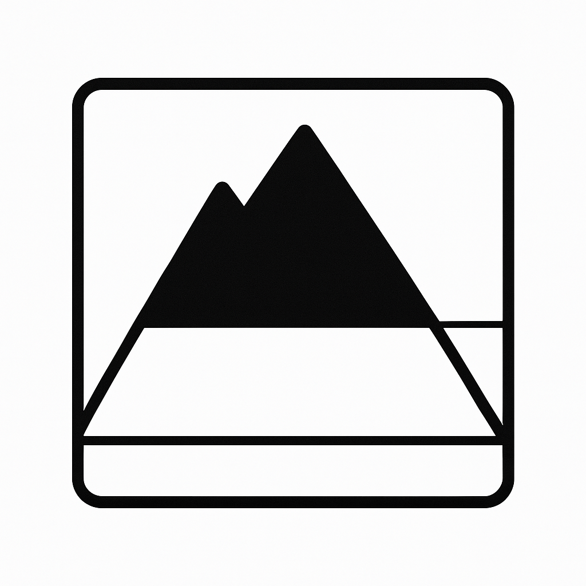
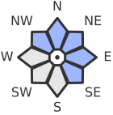

Triebschnee
Triebschnee

Höhenbereich: über 2000m

Exposition: N, NE, E, SE, NW
Informationen: Die frischen und älteren Triebschneeansammlungen sind teils störanfällig. Wintersportler können stellenweise Lawinen auslösen, auch solche mittlerer Grösse. Die Triebschneeansammlungen sind teils überschneit und damit nur schwierig erkennbar.
Touren und Variantenabfahrten erfordern eine vorsichtige Routenwahl.